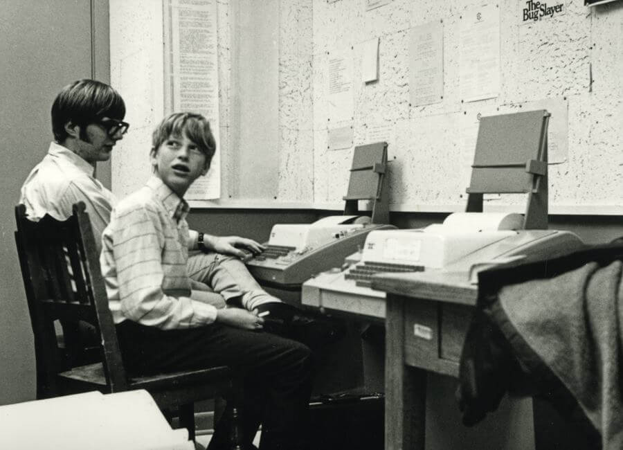

Quem é Bill Gates?
Tantas pessoas o conhecem, há anos, como uma das pessoas mais ricas do mundo que Bill Gates virou ponto de referência nesse quesito. Ser “mais rico que Bill Gates” é o sonho de muitos ambiciosos. Mas ele está longe de ser apenas isso.
Bill Gates e a Microsoft, empresa que ele fundou junto com Paul Allen em 1975, moldaram a forma que hoje nos relacionamos com tecnologia e computadores.
A revolução provocada pela adoção em massa de microcomputadores só foi possível graças à facilidade de uso dos sistemas desenvolvidos pela empresa, como o sistema operacional Windows e o pacote Office.
Foi o sucesso à frente da Microsoft que levou Bill Gates ao topo da lista de bilionários, à custa de muitas madrugadas em claro, durante as quais ele e seus parceiros de negócios escreveram os softwares da companhia. Todo esse trabalho aliado a uma boa dose de agressividade nos negócios e jogadas arriscadas.
Depois de décadas à frente da companhia, Gates decidiu se afastar, deixando a empresa nas mãos de sucessores mais próximos aos novos desafios da tecnologia. Mas isso não significa que ele tenha se aposentado. Longe disso.
Pai de três filhos, Bill Gates se envolveu em causas filantrópicas ao redor do mundo. Ele e sua esposa Melinda passaram a se dedicar a tentar resolver problemas globais de saúde, como a erradicação de doenças e acessibilidade de sistemas de saneamento.
Juntos, eles comandam a mais rica fundação global de filantropia, com cerca de US$ 50 bilhões de verba usada em projetos sociais.
Gates deu um passo além na caridade e montou, com seu amigo bilionário Warren Buffett, uma campanha global para que super-ricos doem grande parte de sua fortuna para causas sociais.
Como começou e como alcançou o sucesso?
William Henry Gates III, ou Bill Gates, é o filho do meio de uma família bem-sucedida de Seattle. Seu pai era advogado, conselheiro em diversas organizações civis e filantropo, autor do livro Desperte para a vida – Reflexões sobre a benção de existir. Dele, Bill herdou o nome, a dedicação aos livros e o lado filantropo.
De sua mãe, Mary, veio a competitividade e o tino para os negócios. Ela se formou em administração de empresas e teve assento em conselhos de administração de grandes companhias, muitas vezes como a única mulher à mesa.
Mary sempre esteva presente no dia a dia dos filhos e, frequentemente, isso gerava desentendimentos entre ela e o filho. A criança sorridente – apelidada de Happy Boy – desafiava a mãe em longas discussões que acabaram levando a família para a terapia.
Estudioso no estilo nerd, algo de que já disse se orgulhar, Bill Gates costumava ficar muito tempo lendo em seu quarto bagunçado e responder que estava ocupado ‘pensando’ quando sua mãe o chamava para alguma tarefa.
Até os 12 anos, ele estudou em um colégio público de sua cidade. Nessa idade, foi colocado em uma escola particular somente para meninos. Uma certa dose de rebeldia fez o garoto cogitar boicotar a prova de admissão para, propositalmente, não ser aprovado. Mas seu espírito competitivo falou mais alto. Ele fez a prova – e passou.
